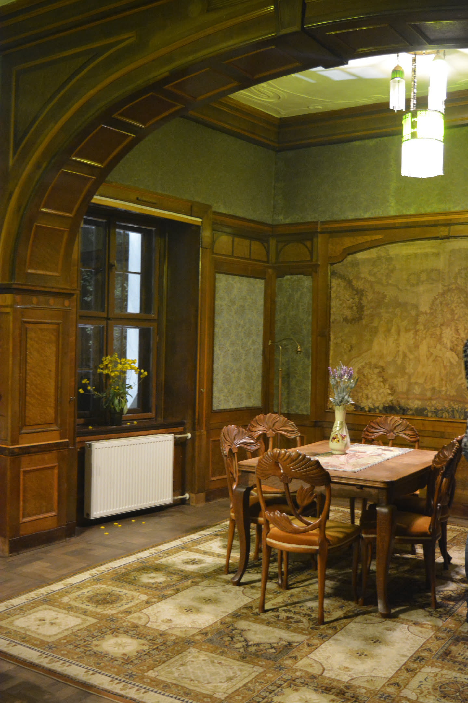
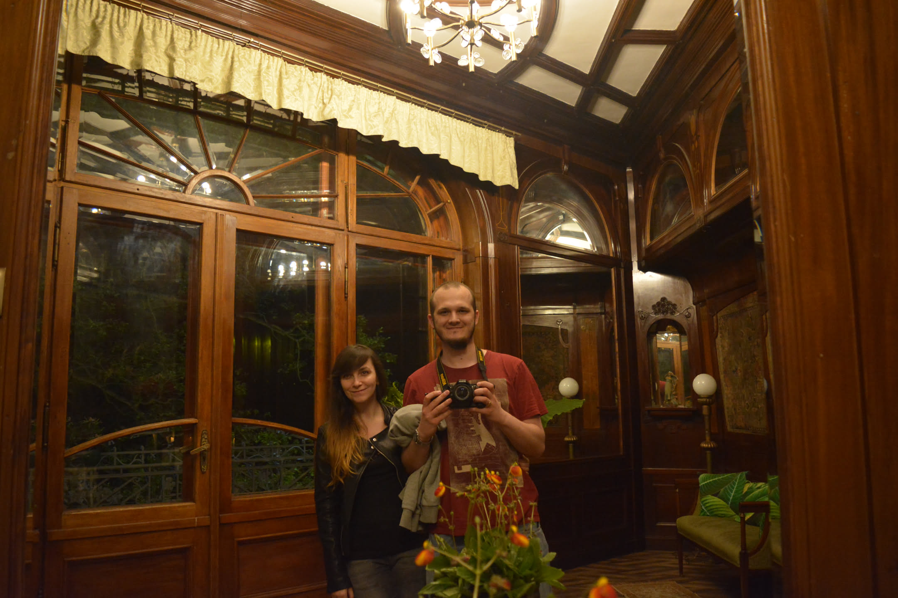
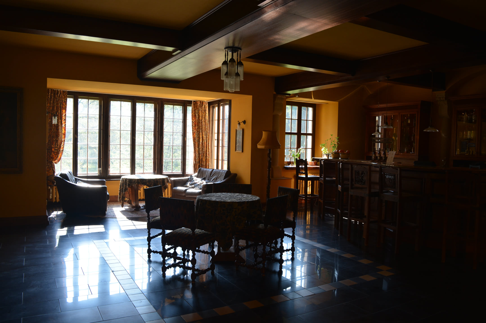
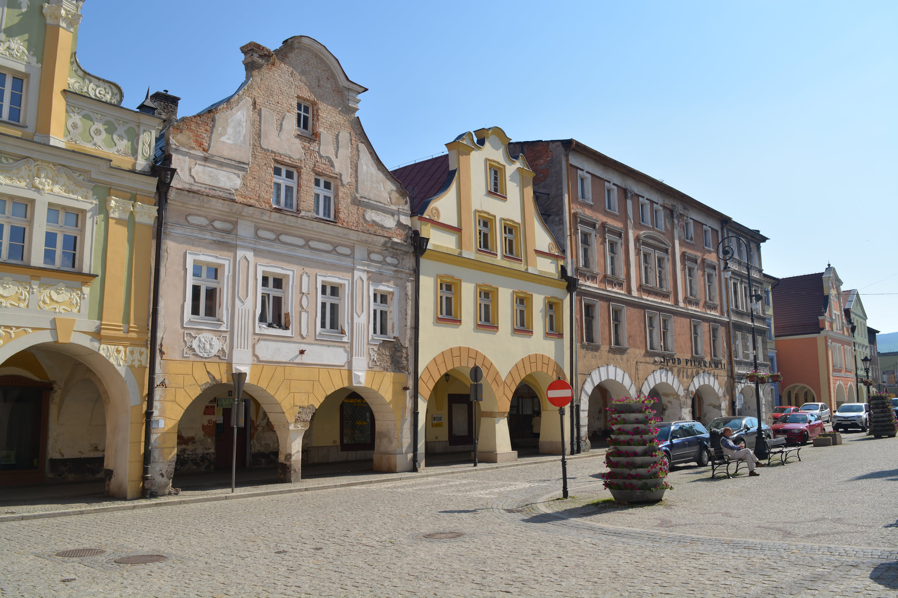
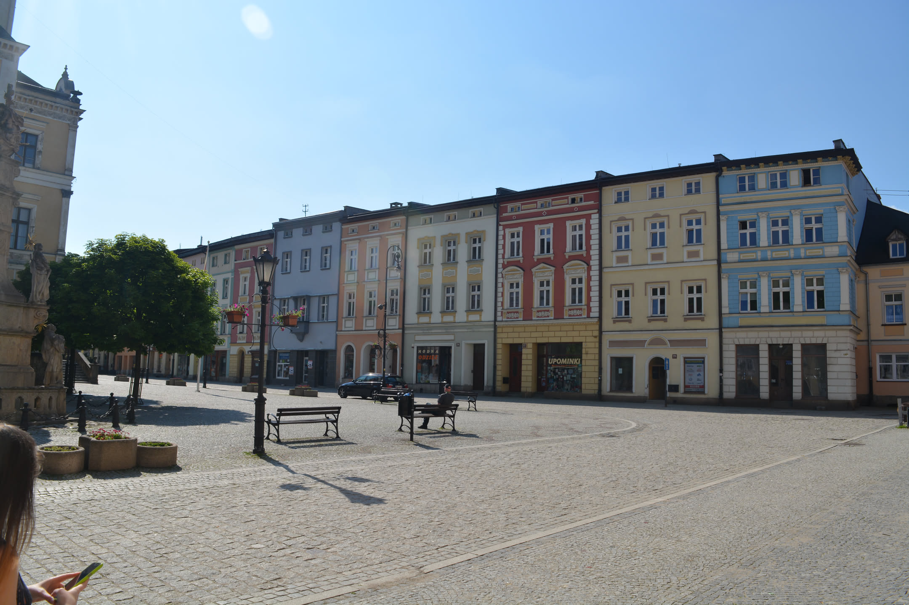
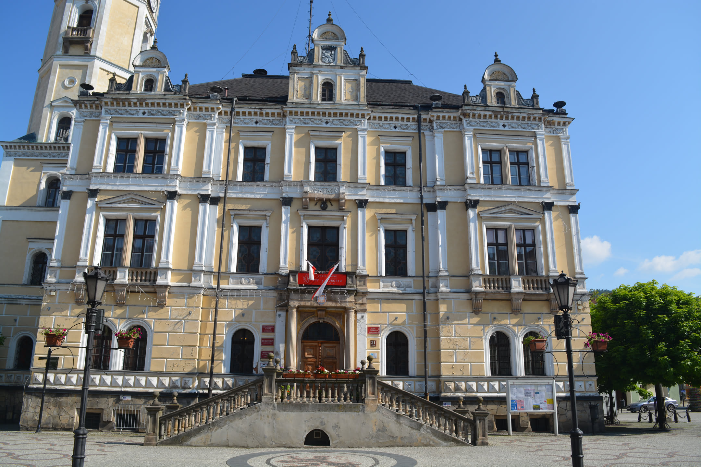
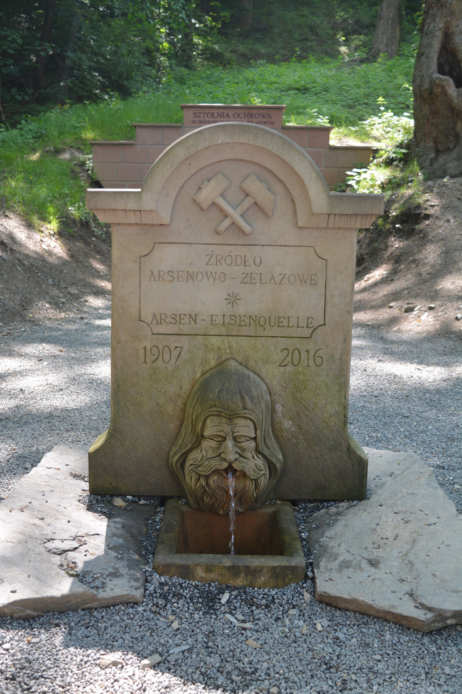
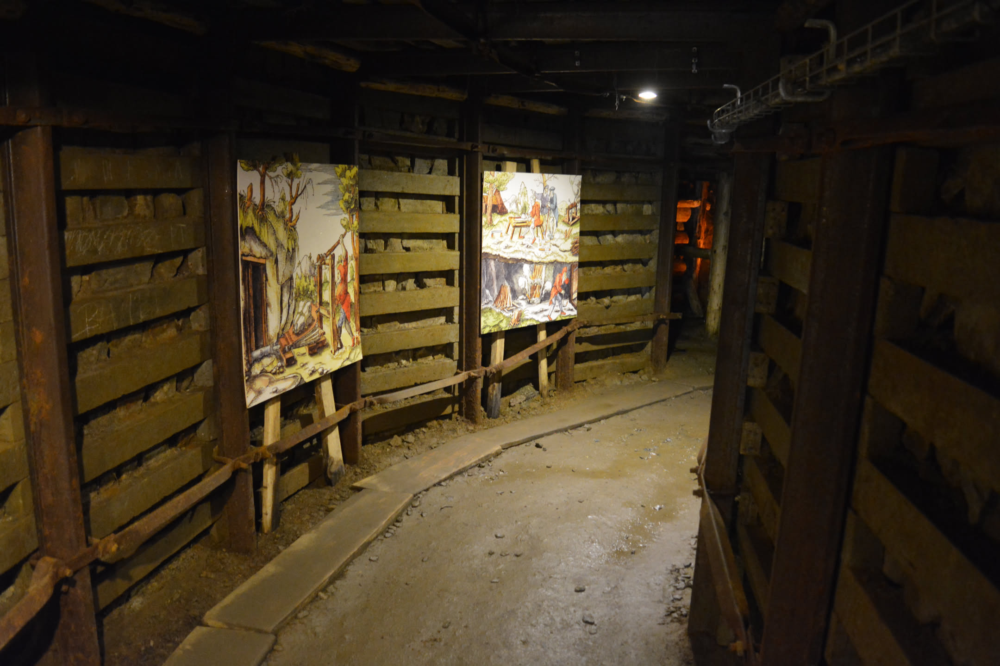
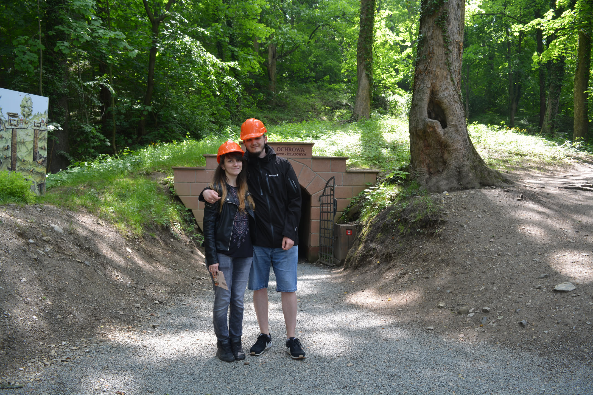

Plan wycieczki
Zwiedzone miejsca
- Zamek na Skale w Trzebieszowicach
- Lądek Zdrój
- Kopalnia złota w Złotym Stoku
Czas wycieczki: 2 dni
Skład osobowy: 2 dorosłych
Punkt początkowy i końcowy: Sułkowice
Jako kierunek naszej następnej wycieczki wybraliśmy okolice Kłodzka z kilku powodów: jest to na tyle blisko od nas, że możemy tam spokojnie dojechać samochodem w jeden dzień i jeszcze coś pozwiedzać, a także nie jest to bardzo popularny turystycznie kierunek. Nie jestem fanką tłumów, więc jeśli mam okazję pozwiedzać coś, co nie jest oblegane, to szkoda byłoby z tego nie korzystać. No i jeszcze nie byliśmy w tym zakątku Polski, więc tym bardziej nas tam ciągnęło.
Zwiedzanie
Zamek na Skale w Trzebieszowicach
Naszą podróż po Ziemi Kłodzkiej rozpoczęliśmy od noclegu w Zamku na Skale w Trzebieszowicach. Już sam przyjazd zrobił na nas spore wrażenie. Długi podjazd, rozległy park i bogato zdobione wnętrza sprawiały, że można było poczuć się jak gość dawnej arystokracji. Historia zamku sięga XV wieku, kiedy w tym miejscu znajdowała się niewielka warownia rycerska. Później została ona przebudowana na renesansową rezydencję, a na początku XX wieku wnętrza zyskały obecną, niezwykle ozdobną formę. Wrażenie robi reprezentacyjna drewniana klatka schodowa, inspirowana wiedeńskim barokiem. Nazwa zamku nie jest przypadkowa bo najstarsza część budowli została wzniesiona na skale nad rzeką Białą Lądecką.



Zwiedzanie
Lądek Zdrój i Złoty Stok
Następnego dnia ruszyliśmy do Lądka-Zdroju, jednego z najstarszych uzdrowisk w Polsce. Spacerowaliśmy po rynku wśród kolorowych kamienice, ratusza z wysoką wieżą i zabytkowych uliczek. Pierwsze wzmianki o leczniczych właściwościach miejscowych źródeł pochodzą z XIII wieku, a przez stulecia do Lądka przyjeżdżali kuracjusze z całej Europy. Ostatnim punktem wycieczki był Złoty Stok, miasto, które przez setki lat żyło z wydobycia złota. Zwiedziliśmy podziemne korytarze dawnej kopalni, zakładając górnicze kaski i schodząc głęboko pod ziemię. Największe wrażenie zrobiły na nas wąskie chodniki, stare tablice ostrzegawcze i podziemne komory, w których przez wieki pracowali górnicy. Tuż obok kopalni odwiedziliśmy skansen i średniowieczną osadę górniczą, gdzie można zobaczyć dawne narzędzia i poznać historię wydobycia złota. W Złotym Stoku przez siedemset lat wydobywano nie tylko złoto, ale także arsen, z którego produkowano arszenik. Dziś cały kompleks jest jedną z najciekawszych atrakcji Ziemi Kłodzkiej.





